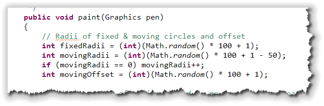
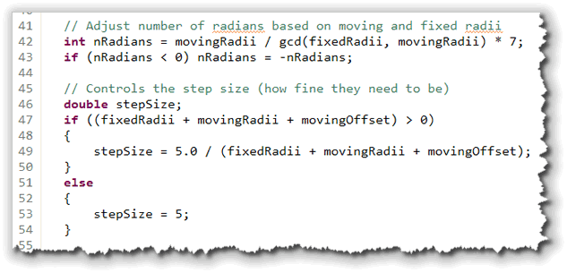
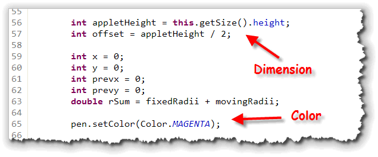
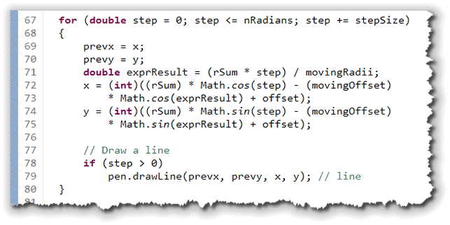
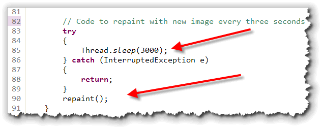
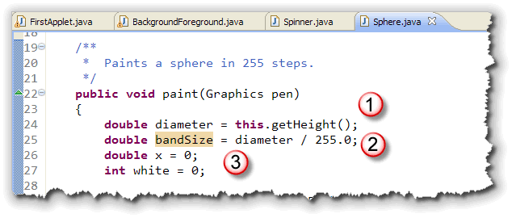
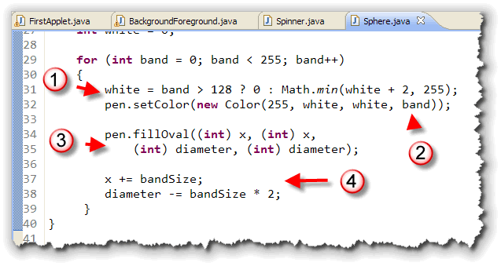

This week you learned how to
use some of the drawing methods in the Graphics
class. This addendum contains some larger and more complex
examples.
I've supplied this material for those of you who want more information and larger examples. You won't be tested on this material, so it is completely optional.
The Spirograph Example
 Using
Using drawLine() you can plot
a series of line segments to draw very complex curves, which
can be really useful in graphing equations and
writing isualization applications.
Let's look at a fairly complex applet that draws "Spirograph" shapes, similar to those drawn by the Hasbro toy you probably had as a child.
The shapes produced by the Spirograph are mathematical
curves of the variety technically known as hypotrochoids and epitrochoids
according to Wikipedia. The equations are fairly complex.
This is
one of those times where you should "step-back" and make sure
you understand the general idea of using lines to graph a curve;
don't get concerned if you don't understand the math.
Click this link to run the applet in your browser. You can download Spinner.java by clicking the link in this sentence.
Calculating the Curves
I borrowed the code for drawing the different curves on this applet from Anu Garg's Spiro applet which is considerably more complex. You can see the original applet at: http://www.wordsmith.org/anu.
A Spirograph is a curve defined by these two equations:
x = (R+r)*cos(t) - (r+O)*cos(((R+r)/r)*t)
y = (R+r)*sin(t) - * (r+O)*sin(((R+r)/r)*t)
where R and r are the radii of a fixed circle and a moving circle, and O is the offset of the moving circle. (No, I don't understand the equations, and you don't need to either.)
The Spinner applet's paint() method begins by
creating variables for each of the variables used in the equation,
and then using Math.random() to initialize them.

Line Segments
Since we'll be drawing curves using radians, we have to calculate
how many radians are needed. We'll also need to decide on a step
size for the loop, which will control how fine the resulting
curves will be. Here's the code that does that:

Preparing to Paint
Before we start drawing lines, we have to find the current center of the
applet to draw with. We can do that by using the getSize()
method, which returns a Dimension object which you met in
the last lesson:

To calculate the center of the applet, you use theDimension
height field, divide that by 2 and store the result in the
variable offset
A few more variables are needed to draw each of the line segments:
Variables for the line end-points (x and y)
and the previous end points (prevx and prevyy).
We also need a variable to store the sum of the two radii as the
lines are drawn.
Finally, a single setColor() is used for all of the lines.
If you wanted to make more colorful shapes, you chould change the
colors inside the loop as the different line segments are drawn.
The Drawing Loop
The loop that draws the line segments is fairly straightforward
(except, of course, for the complex formulas that define the curves
in the first place.)

Basically, the loop just:- goes from 0 to
nRadiansinstepSizeincrements. - Note that the loop control variable,
step, is adouble. - saves the previous values of
xandy. - calculates a new expression value using
stepthe sum of the radii and the moving radii. - using the expression result, new values are calculated for
xandy. - the new values, along with the previous values, are used to draw the current line segment.
Repainting the Applet
To make the applet a little more interesting, I've added code after
the painting loop that calls the applet's repaint()
method. When you call repaint(), the AWT schedules another
call to your paint() code as soon as possible

The next time thepaint() method is called, the
Math.random() method calculates different values for the
different equation parameters, and so a different Spirograph shape is
drawn.
To make sure you have enough time to see the current image, though,
I've added a little "pause" of three seconds between calls to
repaint(). We'll talk about how this code
works a little bit later in the semester.
The Sphere Example
 By changing the color transparency as well as the colors
themselves, you can actually use
By changing the color transparency as well as the colors
themselves, you can actually use fillOval() to
create some spherical 3D effects, like that shown here.
Sphere.java is
an applet that uses a loop, along with the fillOval()
method to draw a sphere with a "3D" effect. Let's see how that works.
The applet begins by setting the applet's background
to black in the init() method. This is important
because the first circle drawn in the sphere will be completely
transparent. Then, as we move toward the center of the sphere,
our circles will become more and more opaque.
We'll draw each of our spheres by drawing 255 concentric rings.
The outer ring will be completely transparent while the inner
ring will be completely opaque:

This applet uses the size of the applet to decide how big to make the finished sphere. If the applet is 255 pixels high, then each concentric circle will be 1 pixels high. At any other size, though, we will need to make the band of color larger or smaller (logically).- To start the
paint()method, define a variable to hold thediameterof the sphere. Here, I've used the applet'sgetHeight()method to initialize the sphere diameter. - Since the diameter could be less than 255, we need to figure
out how wide each color band will be. For that we need
a
doublevariable which I've calledbandSize(). This is initialized to the diameter divided by the number of loop repetitions that I intend to draw. - Finally, we need the variables for
x,y,widthandheight. Since we're drawing a sphere, bothxandywill have the same value, so we only need one of them. We'll usediameterfor the width and height.
The last variable here, white is going to be used halfway
through the loop to change the red color to a pink and then to a white.
This is how we'll write the code for the spectral reflection on the
sphere.
The Painting Loop
Here's the loop that actually paints the sphere on the applet:

Notice that:- I first determine how much white to add to the current band of color. For the first 128 bands, there is no additional white. Each band after that gets an additional two units, up to a maximum of 255.
- Next, I set the color for the current band. The red value is set to 255. The transparency is set to the value of the loop index. That means that the first band of color will be completely transparent (with the value 0), while the last will be completely opaque (with the value 255). The last band of color, which is completly white, represents the light reflection in the center of the sphere.
- Drawing each band is fairly straightforward.
Since we are drawing a sphere, we don't need separate
values for
xandy, or forwidthandheight. We can use the single valuexfor the location anddiameterfor the size. - Lastly, we need to update both
xand thediameter. For each revolution,xneeds to increase by the size of each band. If the sphere is larger than 255 pixels in diameter, then this will be more than a single pixel; if less, it will be a fraction of a pixel. That's whyxhas to be adoubleand not anint.As
xincreases, thediameterneeds to decrease by twice the amount thatxwas increased.
You can click this link to run the applet in your browser.